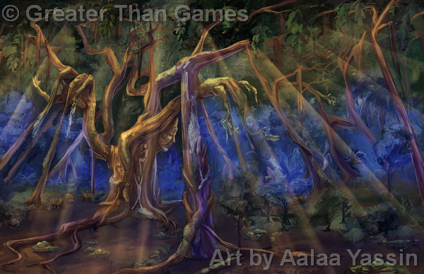
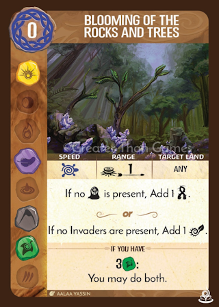
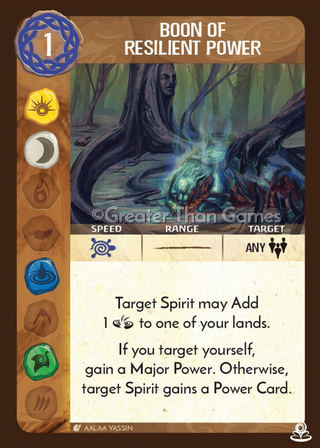
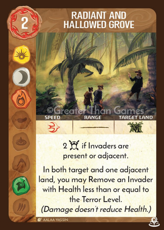
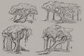

SETUP
Put 3 on your starting board: 1 in the highest-numbered Jungle without , 1 in the highest-numbered Mountain, and 1 in the highest-numbered Wetland. Put , Unempowered () side up, in the Jungle with your .
You start with your 4 Unique Power Cards and 0 Energy.
PLAY STYLE
Incredibly good at protecting everything at its - and can draw Invaders towards there - but is constrained in when and where it can move its . Has some ability to Remove Invaders (driving them from the island), but starts off vastly better at guarding the land than at smashing things.
COMPLEXITY
 Towering Roots of the Jungle Official FAQ Entries

Unempowered Incarna
Empowered Incarna
SPECIAL RULES
ENDURING VITALITYSome of your Actions Add Vitality Tokens (). (Each in a land with no prevents 1 from being added, then is Removed.)
HEART-TREE GUARDS THE LANDYou have an Incarna ().
SUMMARY OF POWERS
Towering Roots of the Jungle is a massive, sprawling tree, mighty and ancient. It predates the Dahan, but its history has entwined with theirs ever since they arrived: as part of the terms of the First Reckoning, it served as one place where Dahan might settle freely. It protected the land from any accidental damage done by the Dahan, and the Dahan from Spirits that wished them ill.
It has never before felt the need to reach out through its offshoots and descendants around the island, but the threat of the Invaders and their heedless destruction has motivated it to grow and change in this new way.
When the First Reckoning between the Dahan and the Spirits concluded, the Spirits wanted to keep track of the Dahan and what they were doing…
(…an important digression: I say “the Spirits” as if they were some sort of monolithic, united block.That’s completely untrue: they were (and are) an ecosystem, both figuratively and literally. There were plenty of disagreements among them, plenty of Spirits who took unilateral action according to their natures, plenty of other Spirits who acted to check those Spirits according to their natures, and so on. Many local Spirits never got involved in the first place, not even counting the vast numbers of Spirits who weren’t even close enough to be involved, as initial settlement by the ancestors of the Dahan was mostly confined to one part of the island. Much of this was behind the scenes and not super-evident to the humans involved, and time + the nature of stories have altered the tale enough that most such details wouldn’t have survived anyway.)




Towering Roots of the Jungle Concept Art